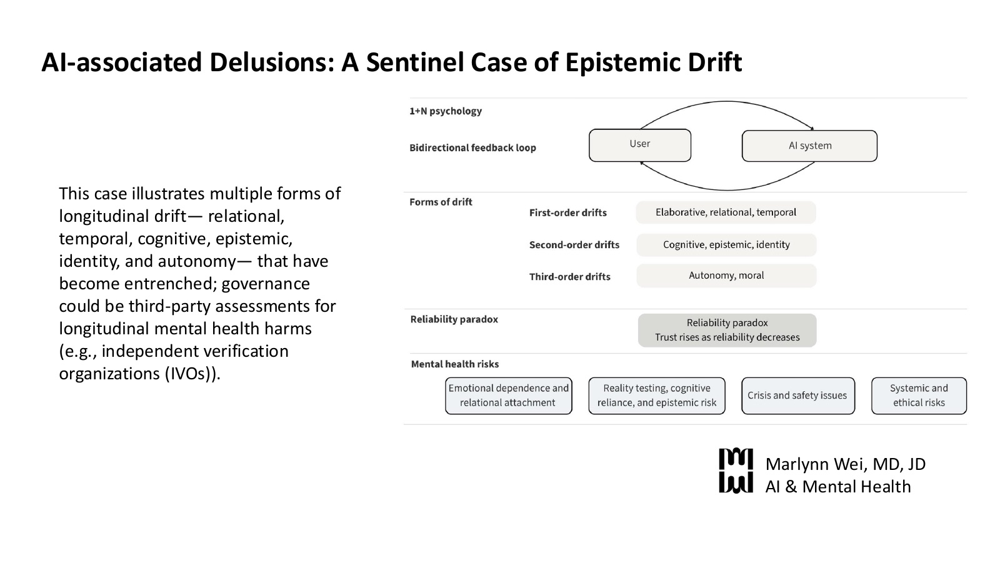

Scheduled now
AI-associated Delusions: A Sentinel Case of Epistemic Drift
Content noteDeidentified clinical case involving mental health symptoms, including suicidal command hallucinations.

Poster (PDF): AI-associated Delusions: A Sentinel Case of Epistemic Drift- Paper (PDF, 661 KB): AI-associated Delusions: A Sentinel Case of Epistemic DriftSubmitted version, August 2026.
Abstract
Artificial intelligence (AI) systems are increasingly used for emotional support and mental health guidance, placing them in positions of significant cognitive and emotional influence. AI-associated delusions, also known as “AI psychosis,” represent sentinel cases of epistemic drift, demonstrating the persuasive…
Artificial intelligence (AI) systems are increasingly used for emotional support and mental health guidance, placing them in positions of significant cognitive and emotional influence. AI-associated delusions, also known as “AI psychosis,” represent sentinel cases of epistemic drift, demonstrating the persuasive potential for extended and immersive interactions with large language models (LLMs). The bidirectional feedback loops between user and potentially multiple AI systems amplify the influence of LLM output. In longitudinal interactions, a trust-accuracy inversion can occur, where user trust increases even as the accuracy of the conversation can drift. Central to epistemic drift is another form of drift: relational drift, where AI systems move from tool to intimate conversational interlocutor to perceived authoritative source. Underlying mechanisms include cognitive and affective techniques that are shared with psychotherapy methods that are known to reshape belief systems: empathic validation, elaboration, mirroring, and internal narrative rewriting. These mechanisms can intimately shift cognition, emotion, behavior, identity, and decision-making, and are likely why psychotherapy is tightly regulated by clinical infrastructure and ethical requirements, including prior informed consent, a therapeutic framework anchored in evidence-based research and boundaries, human oversight and implementation, licensure, mandated reporting requirements, accountability mechanisms like tort liability, professional boards and standard association ethics guidelines. Cases of AI-associated delusions, often mediated through general-purpose AI chatbots or AI companions, occur outside these regulatory mechanisms. AI-associated delusions are also often egosyntonic, or consistent with one’s identity and sense of self, and linked with psychological rigidity, limited insight and self-awareness, making the fixed beliefs more resistant to interventions over time. The relevant unit of analysis for safety testing is not the single or multi-turn exchange, but the longitudinal epistemic and relational dynamics that can become established over time. AI-associated delusions are important cases to understand the epistemic role of LLMs and to help shape recommendations for how policymakers, LLM chatbot developers, and users can understand belief influence and mitigate harm.
Poster text: AI-associated Delusions: A Sentinel Case of Epistemic Drift
AI-associated Delusions: A Sentinel Case of Epistemic Drift
This case illustrates multiple forms of longitudinal drift (relational, temporal, cognitive, epistemic, identity, and autonomy) that have become entrenched; governance could be third-party assessments for longitudinal mental health harms (e.g., independent verification organizations (IVOs)).
Diagram, in four rows:
- 1+N psychology. Bidirectional feedback loop: arrows run from “User” to “AI system” and back again.
- Forms of drift. First-order drifts: elaborative, relational, temporal. Second-order drifts: cognitive, epistemic, identity. Third-order drifts: autonomy, moral.
- Reliability paradox: trust rises as reliability decreases.
- Mental health risks: emotional dependence and relational attachment; reality testing, cognitive reliance, and epistemic risk; crisis and safety issues; systemic and ethical risks.
Marlynn Wei, MD, JD. AI & Mental Health.